Cloud examples
Cloud examples are intented to demonstrate the connection and data post / receive activity on different cloud protocol, and present a simple cloud usage in each application. The developer can reference the ported program and extent or modify in needed.
Most of the cloud library provided by QuickDev-Framework are ported base on Cloud Template archietecture.
TCP demo
The TCP cloud is a basic communication protocol which can easily pass the data between host and client, and the TCP demo example demonstrate a simple used of TCP cloud library to communicate with server.
TCP demo example located at /examples/cloud/tcp_demo.
The following message sequence chart present the simplified application scenario of this example.
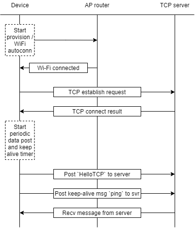
In the beginning of the sequence, the device will connect to the AP auto-matically if the device had a connected record, check on Wi-Fi section for more information. If the device is first used and/or no record exists, user can activate Wi-Fi provision via BLE procedure to select and connect to dediacted AP.
When the Wi-Fi is up, the scenairo will directly trigger the cloud establish activity to connect to the TCP server base on the definition which configured to server IP address. After the connection linked, the application scenario then start the periodic data post to transit data base on interval time.
During the connection, TCP cloud library will also handle the keep-alive and passing the received data to application.
Note
TCP demo example also provide AT commands in app_at_cmd.c to configure the connection information during testing. Please note that setting the power mode to Performance is required.
Setup
TCP Socket Test
The TCP Socket Test is a free tool which help user to create the TCP / UDP client or server. The Java environment is necessary for the client/server setup.
- TCP Socket Test: http://sockettest.sourceforge.net/
In the following try out, we will apply this tool to create the TCP server that the device can connect to and transmit the data.
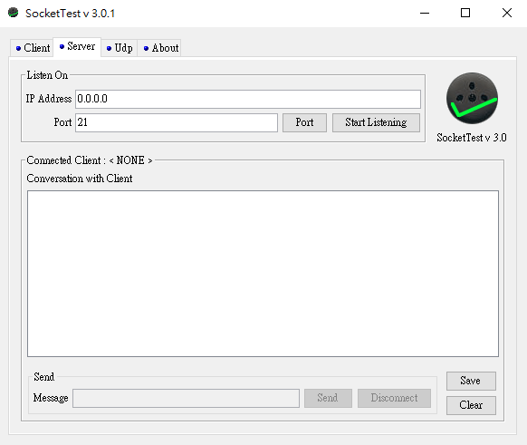
Testing
Step.1 Open TCP local server
Open the TCP Socket Test tool, and select to Server tag as following diagram, and directly click Start Listening button to start the server.
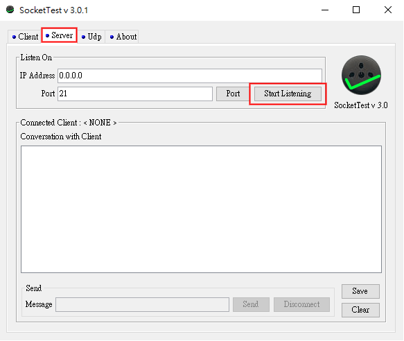
Step.2 Configure IP and Port
Due to the device will connect to TCP Socket Test server in same local network that we just started at Step.1, in the program we will modify the default IP address and port number sets to TCP server IP address and port number, the code located in cloud_config.h.
Info
TCP Socket Test server using 0.0.0.0 IP address, for the device, the linked IP address will be your PC's IP address.
Change the default IP address and port number in cloud_config.h file located in /quick_dev/app_ref/cloud/tcp_cloud.
// TCP server setup
#define TCP_HOST_IP ("192.168.0.0") // the TCP server IP address
#define TCP_HOST_IP_SIZE (15)
#define TCP_HOST_PORT (21) // the TCP server port number
Step.3 Compile and Download
Click Build or Rebuild button to compiler project.
Output file <Project name>.bin located at <Project root>/Output/Object .
You can follow Step5 and Step6 section in Get started to compile and download the project.
Step.4 Connect to AP
As the TCP demo sequence chart section mentioned, the device will connect to the AP auto-matically if the device had a connected record. If not, the device will enable the provision process after boot up, and let user to select and connect AP.
Refer to Wi-Fi provision via BLE section in QD APP try out.
Note
If not applying public TCP server, we recommand that the device and TCP server connect to the same AP during privision.
When Wi-Fi status is up, the application will directly trigger the TCP connection. After the successful cloud connection, the device will shows the log like following screenshot.
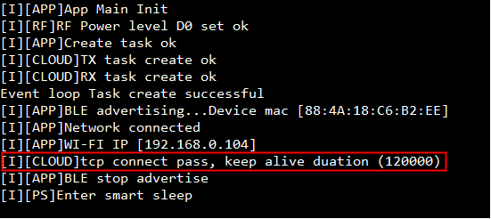
Step.5 Post data to server
After the cloud connected, the application will start the periodic data post in every 20 sec, the interval number configured in qd_config.h.
// <o> TCP_DEMO_PERI_POST_EN - enable periodic post data
#ifndef TCP_DEMO_PERI_POST_EN
#define TCP_DEMO_PERI_POST_EN (1)
#endif
// <o> TCP_DEMO_PERI_POST_INTERVAL - periodic post data interval time (ms)
#ifndef TCP_DEMO_PERI_POST_INTERVAL
#define TCP_DEMO_PERI_POST_INTERVAL (20000)
#endif
While expired, the application will post HelloTCP message to server. The following message will display in TCP server console if received.
Screenshot of Device :
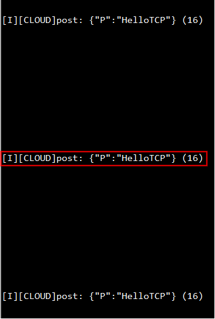
Screenshot of TCP server :
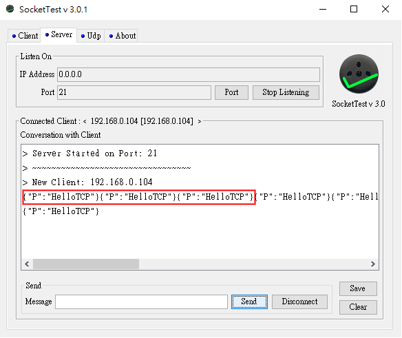
Step.6 Receive data from server
In this step we will send some message from TCP server to the device, we can insert some message like HelloDevice in Message textbox, and press Send button to transit the message to the device.
Screenshot of TCP server :
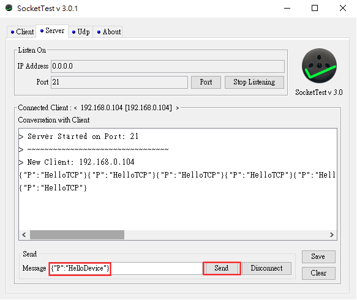
Screenshot of Device :
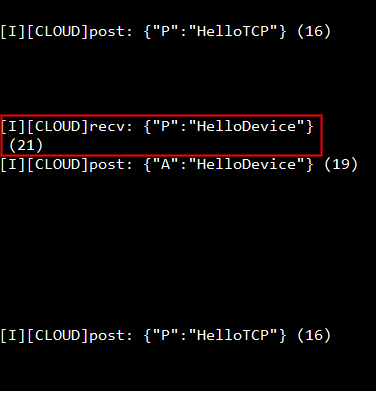
Step.7 Check keep-alive message
After cloud connected, the keep-alive scenario will be started base on the keep-alive interval setting. Once the keep-alive timer expired, the device will send ping message to TCP server as following diagram.
Screenshot of Device :
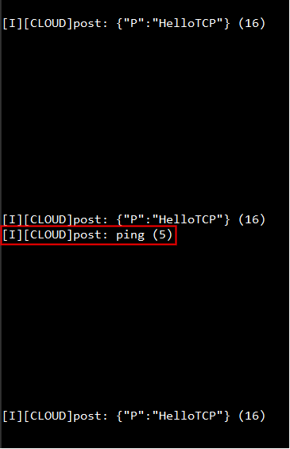
Screenshot of TCP server :
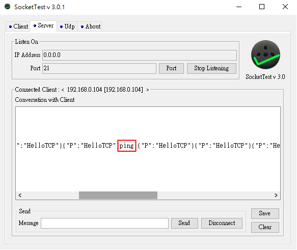
MQTT demo
The MQTT is a publish/subscribe messaging protocol that works on top of the TCP/IP protocol, in MQTT demo example demonstrate a simple used of MQTT cloud library to communicate with server.
MQTT demo example located at /examples/cloud/mqtt_demo.
The following message sequence chart present the simplified application scenario of this example.
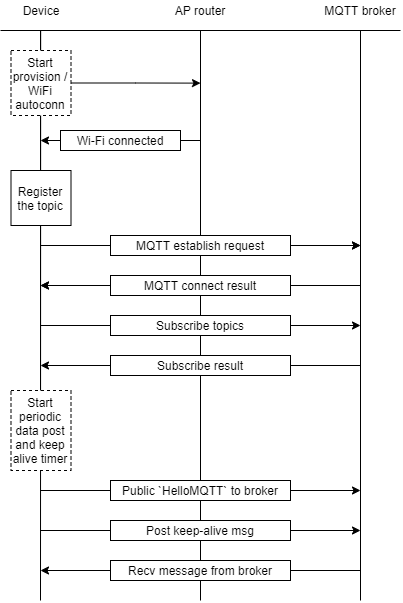
In the beginning of the sequence, the device will connect to the AP auto-matically if the device had a connected record, check on Wi-Fi section for more information. If the device is first used and/or no record exists, user can activate Wi-Fi provision via BLE procedure to select and connect to dediacted AP.
When the Wi-Fi is up, the scenairo will first register an subscribe topic QD_FWK/MQTT_DEMO/SUB_Test/1 and trigger the cloud establish activity to connect to the MQTT broker base on definition which configured to borker URL. After the connection linked, the scenario then will register another subscribe topic QD_FWK/MQTT_DEMO/SUB_Test/2 and start the periodic data posting to the QD_FWK/MQTT_DEMO/PUB_Test/1 topic base on interval time.
During the connection, MQTT cloud library will also handle the keep-alive.
Setup
MQTT-X
The MQTT-X is a cross-platform MQTT desktop client tool from emqx.io, in the following try out we will use this tool as another client charater to check / send message on subscribed / publicted topics.
MQTT-X: https://mqttx.app
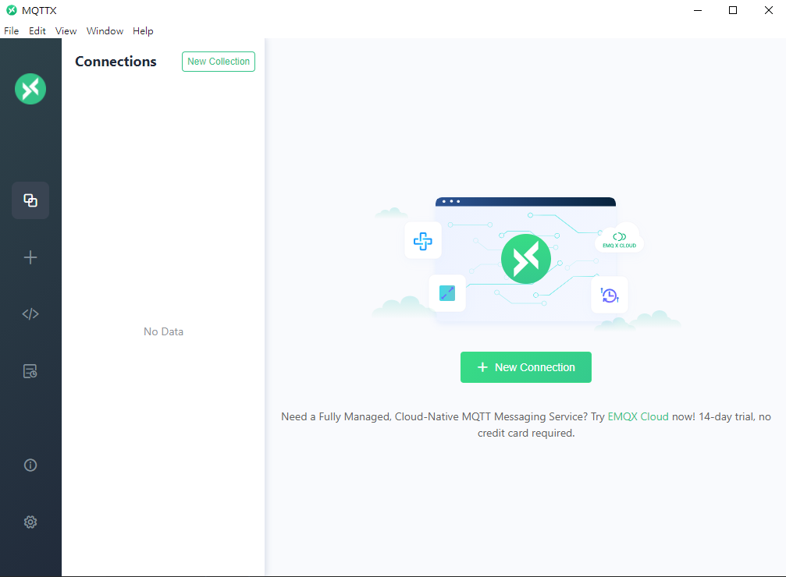
Testing
In this try out, we will using the public server mqtts://broker.emqx.io as a test MQTT broker, check in following link for more detail of emqx borker.
Public EMQX MQTT broker: https://www.emqx.com/en/mqtt/public-mqtt5-broker
Step.1 Start a client on MQTT-X
Open the MQTT-X tool and select + to start a new client. Then insert the setup like following lists.
- Name - The client name
- Client ID - The client unique identify
- Host - The MQTT broker URL (
broker.emqx.io) - Port - the port number (
8883) - SSL/TLS - Enable / Disable the SSL/TLS connection (
enable) - Certificate - Select CA signed server / Self signed (
CA signed server)
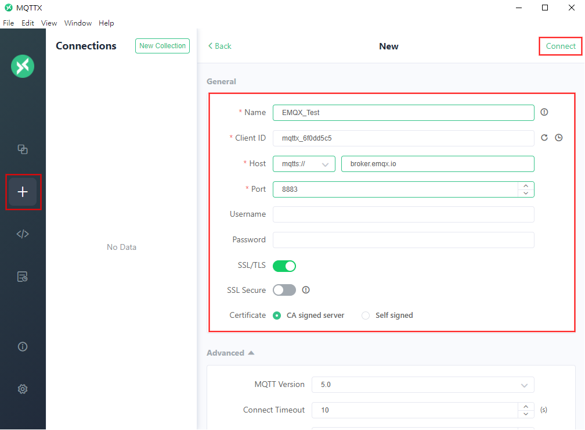
Then press Connect button to start the connection with broker. If the connection successful, the MQTT-X will jump to the control panel like following screenshot.
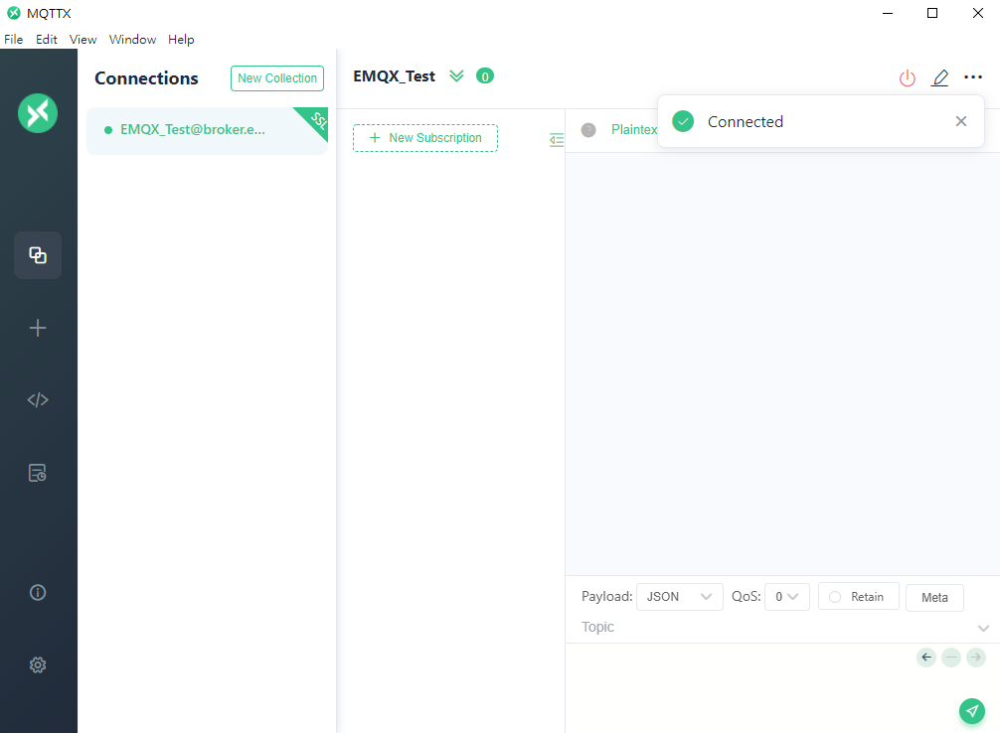
According to MQTT demo sequence chart mention, the device will send the data to QD_FWK/MQTT_DEMO/PUB_Test/1 topic in periodic, so in other side of MQTT-X tool we need to subscribe the QD_FWK/MQTT_DEMO/PUB_Test/1 topic to listen and receive the data that posted from the device.
Press New Subscription to create the QD_FWK/MQTT_DEMO/PUB_Test/1 topic like following diagram.
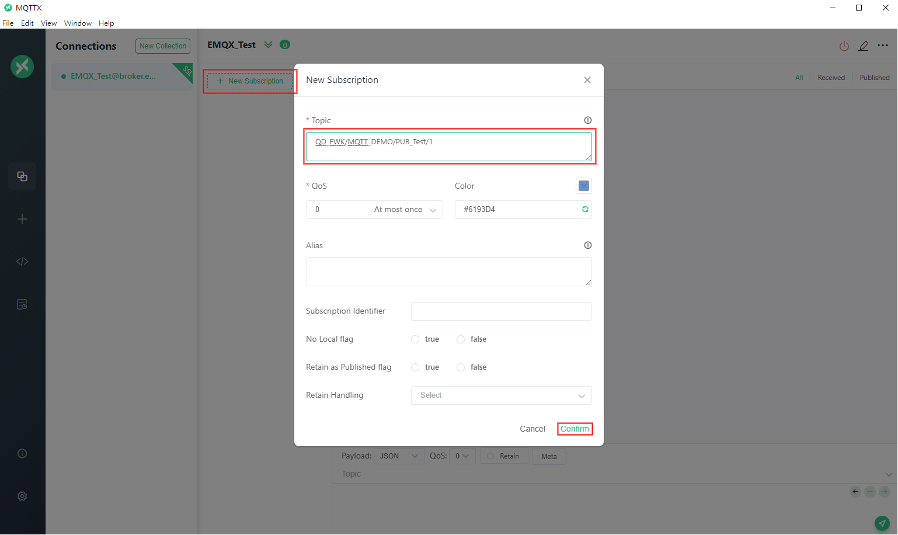
Step.2 Configure the broker URL
Due to we're using the broker.emqx.io public MQTT broker as our testing broker, in program we need to modify the default URL and port number sets to the following code, the code located in cloud_config.h.
// MQTT server setup
#define MQTT_HOST_URL "broker.emqx.io"
#define MQTT_HOST_PORT (8883)
Step.3 Compile and Download
Click Build or Rebuild button to compiler project.
Output file <Project name>.bin located at <Project root>/Output/Object .
You can follow Step5 and Step6 section in Get started to compile and download the project.
Step.4 Connect to AP
As mention in MQTT demo sequence char section, the device will connect to the AP auto-matically if the device had a connected record. If not, the debug will enable the provision process when boot up, and let user to select and connect AP.
Please refer to Wi-Fi provision via BLE section in QD APP try out.
When Wi-Fi status is up, the application will directly trigger the MQTT connection. After the successful cloud connection, the device will shows the log like following screenshot.
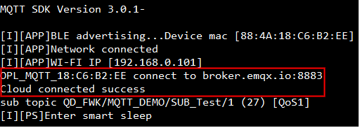
Step.5 Post data to server
After the cloud connected, the application will start the periodic data post in every 20 sec, the interval number configured in qd_config.h.
// <o> MQTT_DEMO_PERI_POST_EN - enable periodic post data
#ifndef MQTT_DEMO_PERI_POST_EN
#define MQTT_DEMO_PERI_POST_EN (1)
#endif
// <o> MQTT_DEMO_PERI_POST_INTERVAL - periodic post data interval time (ms)
#ifndef MQTT_DEMO_PERI_POST_INTERVAL
#define MQTT_DEMO_PERI_POST_INTERVAL (20000)
#endif
While expired, the application will post HelloMQTT message to QD_FWK/MQTT_DEMO/PUB_Test/1 topic. The following message will display in TCP server console if received.
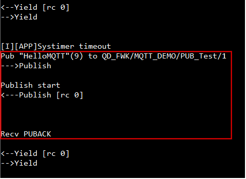
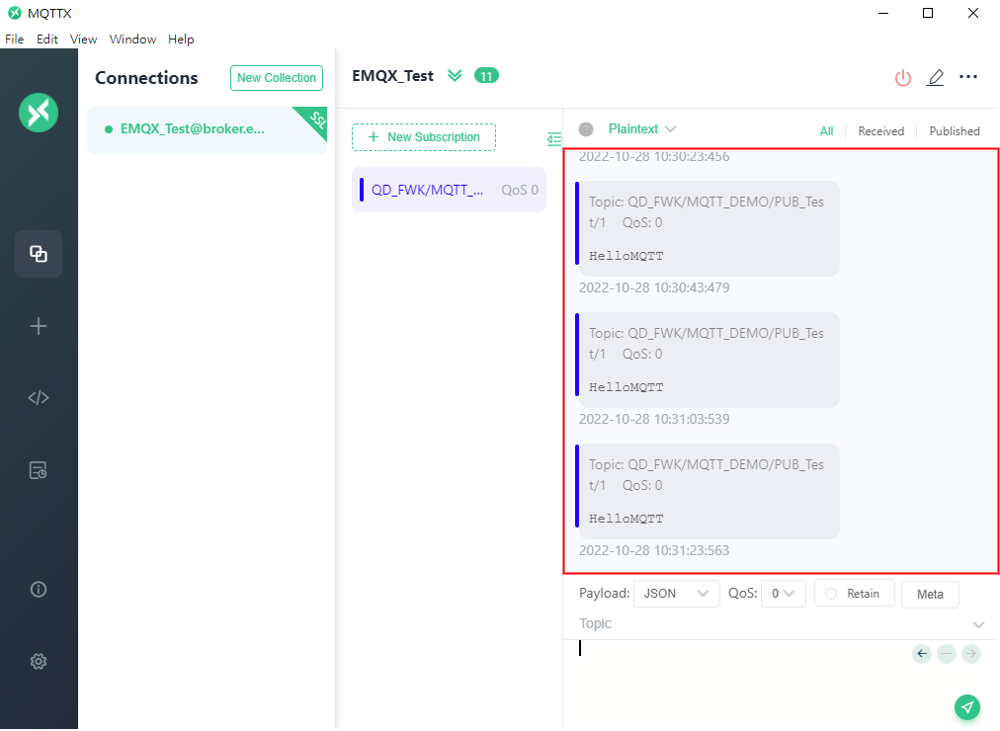
Step.6 Receive data from server
In this step we will send some message from MQTT-X client to the device, we can insert some message like HelloDevice in send console and assgin the public topic /MQTT/DEMO/OPL/SUB1 or /MQTT/DEMO/OPL/SUB2, then press send icon to transit the message to the device.
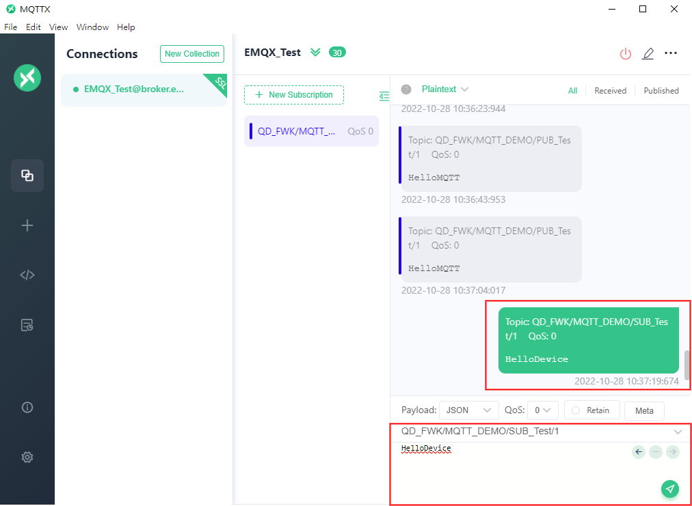
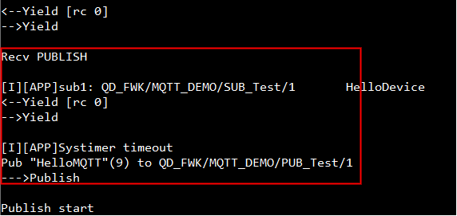
Step.7 Check keep-alive message
After cloud connected, the keep-alive scenario will be started base on the keep-alive interval setting. Once the keep-alive timer expired, the MQTT library will handle the keep-alive with MQTT broker, the message of keep-alive processing as following diagram.
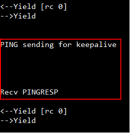